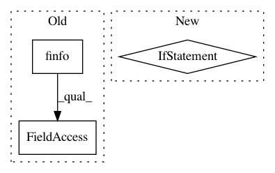

bbfed4c0b19757ceb913766e4d1fd3ee4cd78b30,librosa/feature/inverse.py,,mfcc_to_mel,#Any#Any#Any#Any#Any#Any#,168
Before Change
idx = np.arange(1, 1 + n_mfcc, dtype=mfcc.dtype)
lifter_sine = 1 + (lifter / 2) * np.sin(np.pi * idx / lifter)[:, np.newaxis]
lifter_sine = np.where(lifter_sine == 0, np.finfo(float).eps, lifter_sine)
mfcc = np.where(mfcc == 0, np.finfo(float).eps, mfcc)
liftered_mfcc = mfcc / lifter_sine
mfcc = liftered_mfcc
After Change
lifter_sine = 1 + (lifter / 2) * np.sin(np.pi * idx / lifter)[:, np.newaxis]
// check lifter array for critical values
if (lifter_sine == 0).any():
warnings.warn("Warning: lifter array includes critial values that will likely to invoke underflow.")
// lifter mfcc values
mfcc = mfcc / lifter_sine
elif lifter != 0:
raise ParameterError("MFCC to mel lifter={} must be a non-negative number".format(lifter))
In pattern: SUPERPATTERN
Frequency: 3
Non-data size: 3
Instances
Project Name: librosa/librosa
Commit Name: bbfed4c0b19757ceb913766e4d1fd3ee4cd78b30
Time: 2019-12-01
Author: kogito@hotmail.fr
File Name: librosa/feature/inverse.py
Class Name:
Method Name: mfcc_to_mel
Project Name: scipy/scipy
Commit Name: a62b372b941d4b19e9291b0ca5b68526df0277e9
Time: 2018-06-30
Author: adibhar97@gmail.com
File Name: scipy/spatial/transform/rotation.py
Class Name:
Method Name: compute_euler_from_dcm
Project Name: chainer/chainercv
Commit Name: 21e48c87172b4511688c66d3703f89e42a9c3444
Time: 2017-07-05
Author: Hakuyume@users.noreply.github.com
File Name: chainercv/evaluations/eval_detection_voc.py
Class Name:
Method Name: calc_detection_voc_prec_rec